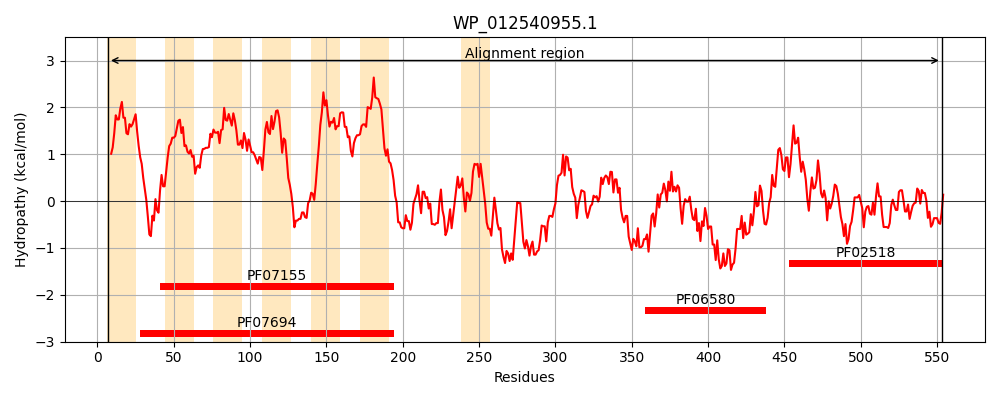
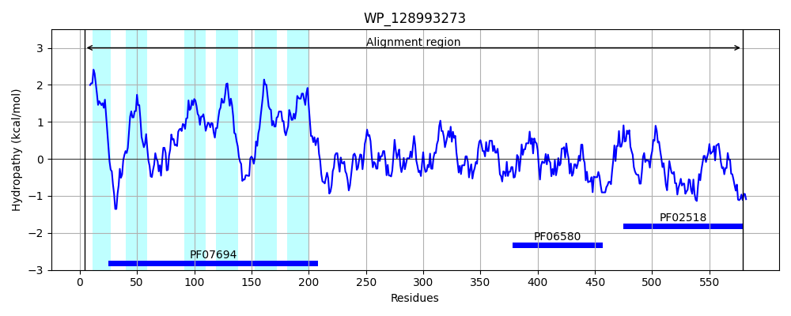
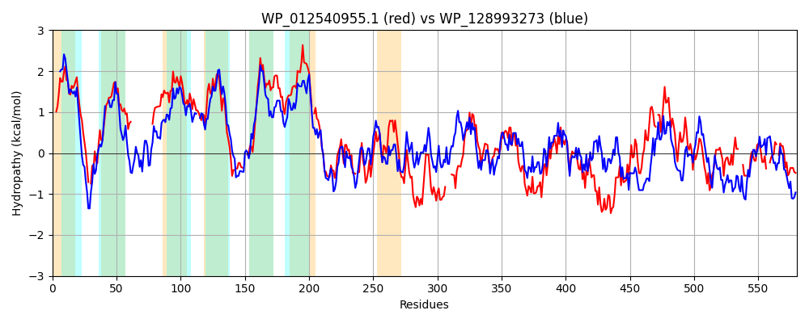

Hit Accession: WP_128993273
Hit TCID: 9.B.33.1.4
Hit Description: gnl|BL_ORD_ID|21843 gnl|TC-DB|WP_128993273.1|9.B.33.1.4 two-component system sensor histidine kinase LytS [Bacillus subtilis]
Mach Len: 580
e:0.000000
Query TMS Count : 7
Hit TMS Count: 6
TMS-Overlap Score: 3.150000
Predicted Substrates:None
BLAST Alignment:
Score: 781 , Bit scores: 305 bits, E-value: 1.8e-96, Alignment length: 580, Percentage identity: 34
Query: 7 MMLAVYDRAALMLICLFFLIRLRLFRELL-HKSAHTPKELLAVTAIFSLFALFSTWSGVPVE----------------GSLVNVRIIAVMSGGILFGPWVGAIVGVIAGVHRYLIDIDGVTAVPCFITSIVAGLLSGLINRKVARDQRW---KIGILAGMVCETLTMILVVVWAPSLSLGLDIVSKIGIPMILGSVCIGFIVL-LVQSVEGEKEASAARQAKLALDIANKTLPLFRH-VNSDSLRQVCEIIRRDITADAVAITNTEHVLAYVGVGEANYQHHDDVISPTTRQAIRYGKIIIKNNDEA----HRTPEIHSLMVIPLWEKGVVTGTLKIYYCHAHRITSTLQEMAIGLSQIISTQLEVSRAEQLREMANKAELRALQSKINPHFLFNALNAISSSIRLNPDTARQLIFNLSRYLRYNIELKDDEQIDIKRELYQIKDYIAIEQARFGDKLTVIYDIDDDVSCV-IPSLLIQPLVENAIVHGIQPCKGKGVVTIGINECGNRVRISVRDTGNGIDPAVVARVEADEMP---GNKIGLLNVHHRVKLLYGE--GLHIRT-LTPGTEIAFYVPNQ 553
+M+ + +R +++I F L +LFR+ L ++ + K +L +IFSLF++ S ++G+ ++ GS+ N RI+ V GG+L GP+VGA +G++AG+HR+ + G TA+ C ++SI+AG+L+GLI R + R +I L G+ E+L MI++++ A S ++VS IGIPMIL + FI L ++Q++ ++E + A + L IA++TLP FR +N +S + V II + DAV++T+ E +LA+VG G ++ +I+ +++ I+ G I+ + E H +H+ +V+PL G GTLK+Y+ ++ +E+A GL+ + STQLE+ AE ++ AE++ALQ+++NPHFLFNA+N IS+ R + + R+L+ LS Y R N++ I + +EL + Y+++EQARF K + +ID + + IP ++Q LVENA+ H + VT+ + V + V D G GI P V+ + P G L N++ R+ L+G+ LHI + + GTE++F VP Q
Sbjct: 4 LMIMMLERVGIIVILGFILAHTKLFRQALQNQDGYKGKAILI--SIFSLFSIISNYTGIEIQRNMIVNNDWVFTIDPSGSIANTRILGVEIGGLLGGPFVGAGIGILAGLHRF--SLGGSTALSCAVSSILAGVLAGLIGRYFTKRYRMPTPRIAALVGIGMESLQMIIILLMAKPFSDAWELVSMIGIPMILINGTGSFIFLSIIQAIIRKEEQARALETHRVLTIADQTLPFFRQGLNENSCKSVAAIIHKLTGTDAVSLTDKEKILAHVGAGMDHHIPSKSLITGLSKKVIKTGHIMKAISQEEIECMHAECPLHAAIVLPLTSNGNTIGTLKMYFKSPAGLSQVEEELAEGLAMLFSTQLELGEAELQSKLLKDAEIKALQAQVNPHFLFNAINTISALCRTDVEKTRKLLLQLSVYFRSNLQGARQLLIPLSKELNHLNAYLSLEQARFPGKYKIELNIDSRLEQIEIPPFVLQVLVENALRHAFPKKQDMCKVTVCVLSDDASVYMKVTDNGRGIPPDVLPELGKKPFPSKEGTGTALYNLNQRLIGLFGQQAALHISSEVHKGTEVSFQVPMQ 579 | Protein Hydropathy Plots: |
|---|
|  |  |
Pairwise Alignment-Hydropathy Plot:
|
|---|
|  |